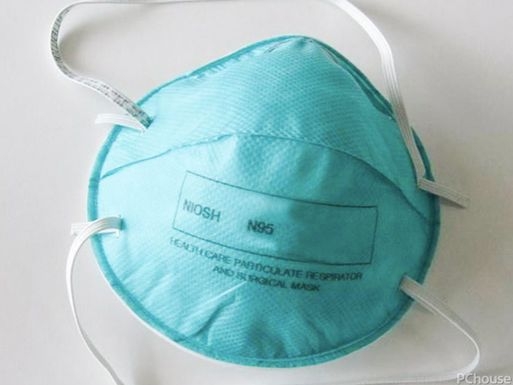

三个武汉人的外地隔离日记｜故事FM
原文链接 备份链接 🎧 点击上方图片，跳转「故事FM」小程序，收听真人讲述。记得添加「我的小程序」，一键收听全部故事哟！ 故事FM 前几天采访的武汉人，都是目前身在武汉的武汉人。但我们知道，现在散布在全国各地的武汉人，甚至湖北人，都在主动 …

非常时期，武汉成了全国人民挂念、祈福的城市。封城后，武汉人民的真实生活是什么样？
正和岛自1月26日起特别推出《叶青：我在武汉疫区的第N天》专栏。叶青是一位定居武汉40年的市民，也是一名学者和官员。接下来的一段时间，他会用笔记录下亲身经历的、观察到的武汉，为此他还专门外出到大街上、到超市里，获得一手真实的信息。这将是一份宝贵的史料。感谢他，我们得以更真切地感知到武汉疫情。让我们一起为武汉加油！
作者：叶青 中南财经政法大学教授、博导 湖北省统计局副局长 正和岛蓝色岛邻
封面：北京日报
来源：正和岛案例（ID：zhenghedaoanli）

武汉死亡41例
2日，正月初九，阴天。
2日，全国新增确诊病例2829例（湖北省2103例），新增死亡病例57例（湖北省56例，重庆市1例）。
截至2日24时，全国累计报告确诊病例17205例，累计死亡病例361例。
2日，湖北省新增病例2103例，全省新增死亡56例，其中：武汉市41例、荆州市2例、荆门市4例、鄂州市2例、黄冈市2例、随州市2例、天门市3例。
截至2日24时，湖北累计确诊病例11177例，死亡350例。

终于启动最有效的集中隔离方案
从1月23日以来，武汉采取了一系列措施，包括封城限车，但是病人的数量还是在无情地增加。怎么办？
看来只能拿回“非典”时期最有效的办法——集中隔离。
武汉规定，2日中午12点前，各区必须完成现有“四类人员”的集中收治和隔离工作，对新增人员要实现“日清日结”。
所谓“四类人员”，就是：
（1）确诊的新型冠状病毒感染的肺炎患者。
（2）疑似的新型冠状病毒感染的肺炎患者。
（3）无法明确排除新型冠状病毒感染的肺炎可能的发热患者。
（4）确诊患者的密切接触者。
要做到这一点，各区、街道、乡镇要承担很大的责任与工作量。在武汉，不仅医务人员的工作量到了极限，基层干部的辛劳也到了极限。有的干部还有抬尸体的活。
说实话，作为呆在武汉重疫区的900万人之一，我最担心的就是，有病的人还在街上逛，在超市购物，在麻将馆“观摩”。说不定就与你擦肩而过，你免费“分享”了他的“飞沫”。
在24日晚上，有网友在微信上给我一条建议：强烈建议征用学校和宾馆。只需要进物质和医生就可以了，可以省去很多（建筑）时间。有几百所学校正在放假期间，用完之后加以消毒，省力又省时。时间就是生命，不要再搞什么形式主义了。
25日8点多，我立马通过几个渠道（省民进、民进中央、中新社、湖北省政协APP、微信小程序国务院客户端）递交这个建议。可惜晚了9天。
2月2日，钟南山在接受采访时也表示：目前有疑似和已经确诊的患者因病房不够回家自行隔离，这种行为非常危险。
不听老人言，吃亏在眼前。
有了定点医院、隔离医院，这场战争才有结束的时候。
 火神山医院交付军方
火神山医院交付军方
从1月25日正式开工至今，7000余名建设者9天日夜鏖战，与时间赛跑，火神山医院2月2日完工！
2日上午，在雾霾天气中，火神山医院正式交付军队医务工作者。

火神山医院有1000张床。军队抽组1400名医护人员于2月3日起承担武汉火神山医院医疗救治任务。包括前期到达的三大军医大学的450名专业人员与2日8架大型军机运送的大量来自各大战区总医院的医护人员。
还有一条消息是，2日，国家卫生健康委再次从10省市调配的1200名重症医学专业的医生和护士到达武汉。
这样的话，超过9000的省外军民专家、医生、护士在武汉与本地医生、护士并肩战斗。坚持了近一个月的武汉本土医护人员总算可以修整一下了。

正和岛岛亲企业九州通出手
因防控新冠肺炎物资调拨不及时等问题，湖北省红十字会、武汉红十字会引发关注。武汉新冠肺炎防控指挥部已经指派九州通等协助武汉红十字会分装物资。
九州通1月31日中午12点正式启用武汉国际博览中心A2、A3馆，负责武汉红十字会捐赠物资的物流运营管理，主要任务是把物资清点、梳理好。
目前所有产品的卸货由武汉城投负责，入库商品的分类堆码由九州通下属物流公司负责，商品质量和是否医用由市场监督管理局派驻人员负责，产品数量由市统计局派驻人员统计，待核验无误后，三方在入库单上进行签字确认。
九州通负责商品货位库存管理，同时将药品、器械、重点器械产品类库存交市卫健委，非药品类交市发改委进行货物的分配。物流公司接受上述单位的出库要求，下发调拨指令，并在系统中开具出库单并打印出库拣货单，现场拣选完成后，核减库存确认，将拣选商品按照配送单位，投放出库暂存区，等待配送。
九州通安排了30多人，还有其他单位的很多工人在现场帮忙。
九州通每天晚班人员会在24点进行扎账，对当天收发货完成的商品进行动销盘点，保证账务准确。会计的重要性有体现出来了。
九州通创始人刘宝林原来还是正和岛湖北岛邻机构的荣誉主席，为人非常低调。
九州通医药集团股份有限公司发轫于1985年，是一家以西药、中药和医疗器械批发、物流配送、零售连锁以及电子商务为核心业务的股份制企业。是湖北最大的民营企业。
2019年8月22日，2019中国民营企业服务业100强发布，九州通排名第22。
2019年9月1日，2019中国服务业企业500强榜单在济南发布，九州通排名第87位。
3日，九州通开盘涨停，报18元，总市值337.98亿元。
真是好人有好报。

昆明：公务员不用N95口罩
在“两天一家一人外出购物”的“黄冈模式”出台后，2日温州也如法炮制。我的老家——福建南平市的部分县市也是如此。
这些规定都是严于武汉的。
我所在的小区，车可以出入，整个小区只保留一个门，人员进入要测温。
比这个更严格的小区是，车不能出入（车不能进，能不能出不清楚），整个小区只留一个走人的小门。这是因为附近居民区有较多病人。
当前在火车站、机场、地铁站等人流密集的公众场所使用的体温检测方法存在一些局限：
传统额温枪——检测速度较慢，从而增加交叉性传染的风险。
发热筛查系统——需要现场值守的工作人员用肉眼观察异常情况。
拥有一定 AI 能力的智能测温系统——对于远距离、大范围，以及面部特征过少（佩戴帽子和口罩）的检测可能会出现漏判误判。
2月1 日，百度表示，正在把 AI 技术投入到新型冠状病毒疫情防控中。比如，在北京清河火车站落地应用了 AI 多人体温快速检测解决方案。

公安部门通过刷脸抓住了不少逃犯，现在百度这套系统又可以快速测体温。以后干脆刷脸、测温融为一体。

我国口罩的产能大约是每天2000万，其中医用的外科口罩产能是220万，医用的N95的产能大约是60万。医用N95这部分资源是非常宝贵的，这是用于重症病房的医务人员用的口罩，这部分资源应该要采取特殊的措施来统一调拨，统一管理。
1日下午，在昆明市应对疫情工作领导小组指挥部第五次会议上，市长王喜良强调：“其他公务人员一律不准用KN95级别的口罩，把专业的防护设备让给更需要的医护人员”。
希望成为全国公务员的一个集体行动。

小结
2日武汉的新变化，让市民略感放心。
有了集中隔离，有了亲人解放军，武汉有救了。
从封城到集中隔离，仿佛又看到了当年抗击“非典”的架势。
有了强大的战斗力，有了全国人民的支持，这场战争终于进入了相持阶段。
通过这十天的观察，我觉得要打赢这场特殊的战争，一定要“全民皆兵、万众一心”，才能够取得胜利。
作者：叶青，1962年3月出生，第十、十一届全国人大代表、国务院新闻办专家库专家，曾任中国民主促进会湖北省委员会副主任委员（2000-2017）。他被网民称为“中国最具个性官员”、“车改第一人”，曾荣获2007年度人民网十大社会责任博客、南方周末2011年两会“十大言者”、《南风窗》2012年十大公益人物、2019政务微博十年·先锋等等。
原文链接 备份链接 🎧 点击上方图片，跳转「故事FM」小程序，收听真人讲述。记得添加「我的小程序」，一键收听全部故事哟！ 故事FM 前几天采访的武汉人，都是目前身在武汉的武汉人。但我们知道，现在散布在全国各地的武汉人，甚至湖北人，都在主动 …
原文链接 备份链接 大家好，我是田静。 疫情爆发最严重的那几天，我家的亲戚被隔离了。 听到消息后家里人都吓得不轻。原来是亲戚小龙春节前去过武汉一晚，回来后就发烧、胸闷、呼吸困难，在老家农村，只能监管，不能诊治。 每天在家隔离，实时向当地村 …
原文链接 备份链接 文/杜圆圆 编辑/单一 根据预测，新冠肺炎或将在一周后，迎来新的爆发期。从去年12月初被发现，到目前为止，疫情已经持续了两个月的时间。 从始至终，医护人员一直是最前线的逆行者。武汉这座刚崛起的新一线城市，成了全中国最惨 …
原文链接 备份链接 驰援武汉 | 600多公里、12小时、横穿三省、 一位货车司机的“逆行者”之旅 2020-02-02 12:07 作者：陈茂利 来源：中国经营网 本报记者 陈茂利 北京报道 公路电影《摩托日记》中有句广为人知的台词：“ …
原文链接 备份链接 和老高一样，我们都等待着这一天，作为一名在武汉打拼的普通市民，我爱这座城市，希望武汉好起来，希望我的故事能带给你们力量。 口述 | 陈 璇 整理 | 竹 里 我叫陈璇，今年48岁，湖北咸宁市嘉鱼县人，2013年，我和老 …